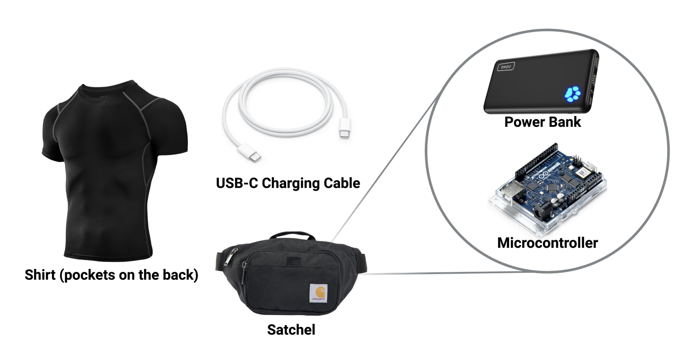
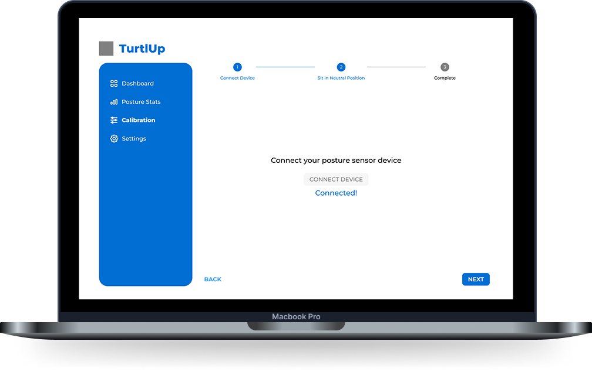
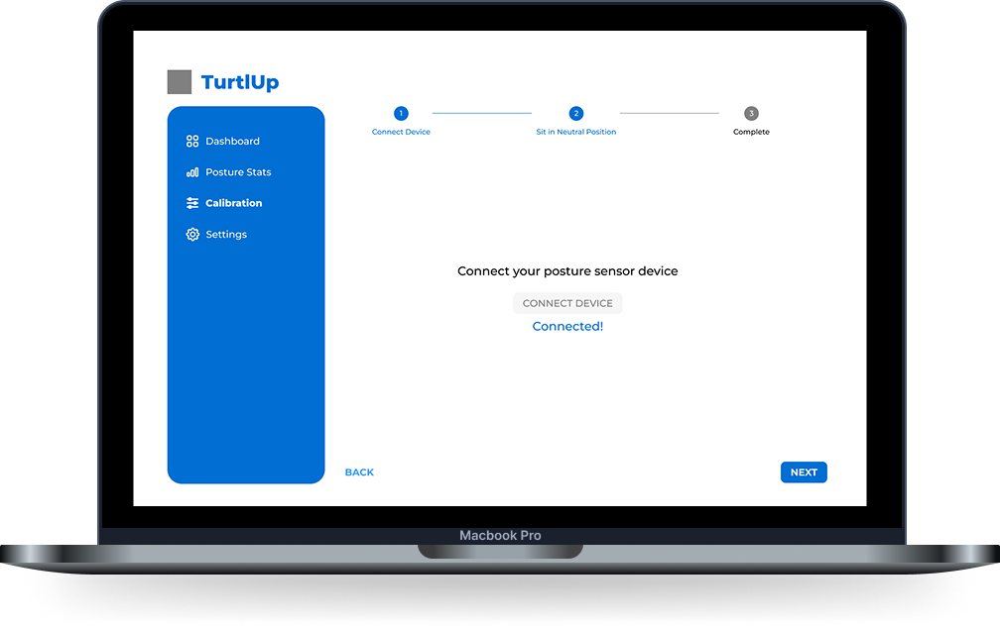
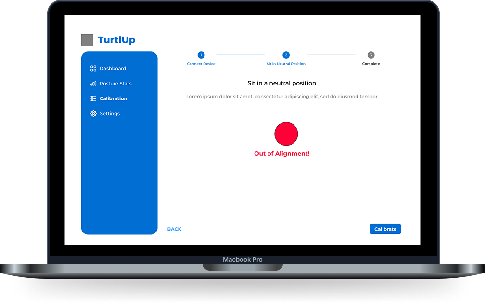
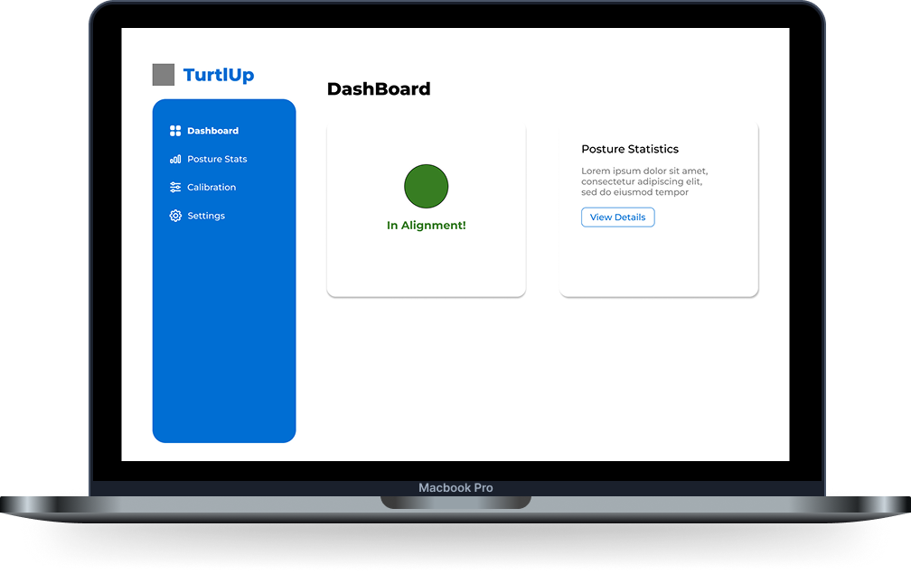
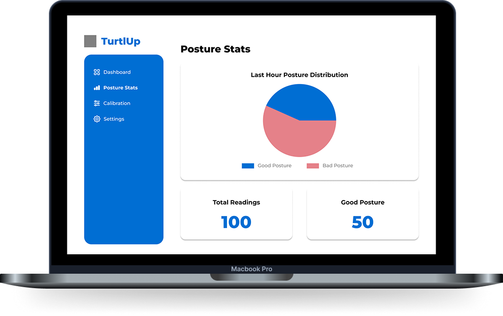
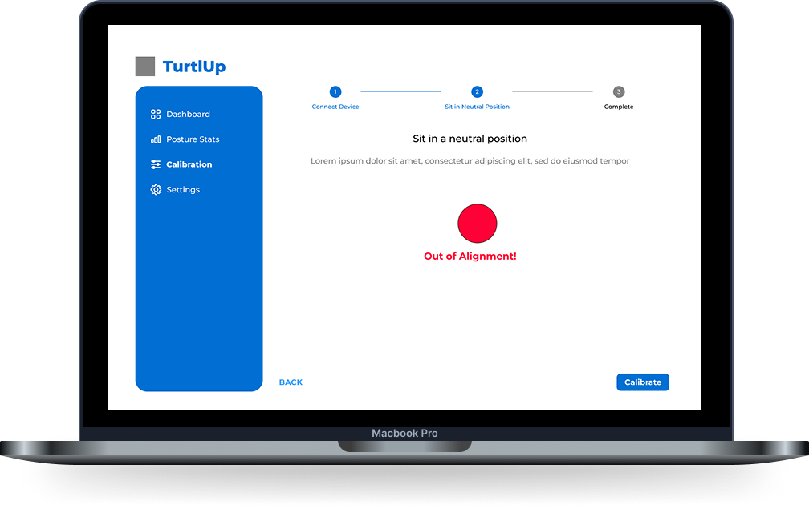
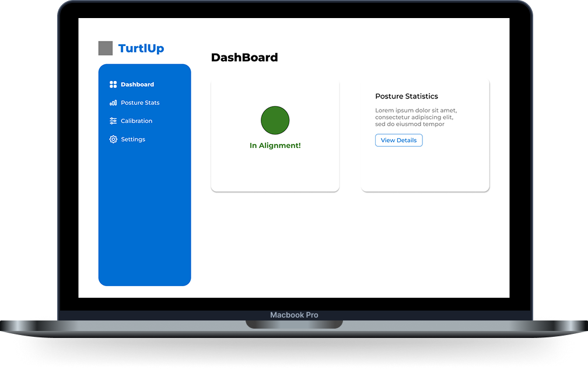
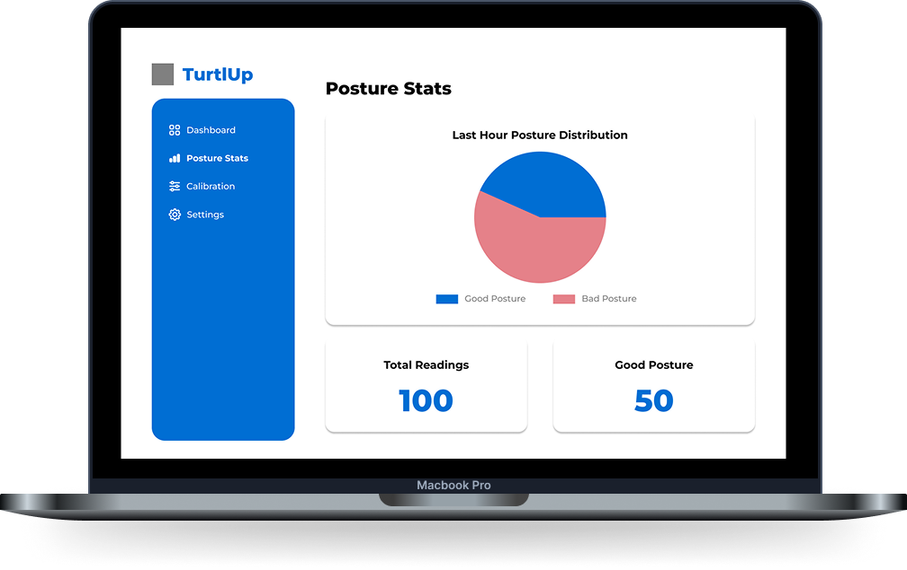

CONTEXT
Back pain affects 39% of U.S. adults due to poor posture and lack of awareness. The posture correction market represents a $1.24B opportunity in 2024.
How might we help users build healthy sitting habits through real-time awareness and feedback?
Click to reveal solution →TurtlUp uses a wearable compression shirt with embedded IMU sensors to monitor posture in real time, delivering gentle haptic feedback when slouching is detected. The system connects via Bluetooth to a custom web app that enables personalized calibration, data tracking, and customization.
← Click to see questionRESEARCH
Target Population & Primary Market
Our target end users are college students and office workers—both groups spend long hours sitting at desks and face high risk for posture-related discomfort.
Using the SPA framework, we evaluated both segments to prioritize our target market:
| User Segment | Size (S) | Pay (P) | Access (A) | Total Score |
|---|---|---|---|---|
| College Students | 3 | 1 | 3 | 9 |
| Office Workers | 3 | 2 | 1 | 6 |
College students score higher due to their large market size, high accessibility, and strong need despite limited budget. We're focusing on them first, then scaling to office workers.
User Research
To better understand the needs and behaviors of our target users, we conducted user interviews with 10 college students. The interviews focused on the following key areas:
When and why slouching occurs
How students notice and react to it
What strategies they've tried to improve posture
Preferences for receiving feedback and reminders

After grouping themes using thematic analysis, we identified four key insights:
Slouching occurs while sitting during focused tasks
"I only slouch when I'm really focused on my laptop, like writing papers or coding."
This led us to focus primarily on sitting postures.
Slouching happens unconsciously
"I don't realize I'm slouching until my back or shoulders start hurting."
Real-time awareness is critical for behavior change.
Deep concentration overrides posture awareness
"I wouldn't check my phone for notifications while I'm deep in work—it's too distracting."
We ruled out app-based notifications in favor of subtle vibration-based feedback that doesn't interrupt workflow.
Feedback should be gentle reminders, not constant corrections
"I don't want something constantly nagging me. Just a gentle nudge would be helpful."
We integrated gentle, non-intrusive feedback into our prototype design.
User Portraits
We created user portraits to synthesize our findings and guide design decisions based on real user needs and behaviors.

DESIGN
Product Overview
TurtlUp is a comfortable wearable undershirt with embedded sensors that monitor posture in real time and deliver gentle haptic feedback when slouching is detected.

Wearable Design
IMU sensors track spinal alignment and shoulder position. Haptic motors deliver subtle vibrations to alert users without disrupting workflow.
Web App Wireframes
The companion web app enables device calibration, posture tracking, and customizable feedback settings.
 

 





BUSINESS ANALYSIS
TurtlUp employs a hybrid business model combining hardware sales with a SaaS subscription.
| Revenue Stream | Description | Estimated Value |
|---|---|---|
| Wearable Shirt + Sensor Units | One-time purchase of the starter kit | $50 |
| SaaS Subscription | Monthly access to premium app features | <$10/month |
| Upgrades & Add-ons | Custom shirts/sleeves, sensor replacements | $10-$30 |
The $50 starter kit includes a modular, washable sensor unit with ESP32-S3 microcontroller, IMU sensors, and vibration motor. An optional subscription unlocks premium features like personalized analytics and PT Mode for real-time posture guidance. Since our primary end users are college students, this approach keeps hardware affordable and accessible while creating recurring revenue and enabling continuous product development.
FINAL PROTOTYPE
The final prototype demonstrates the complete TurtlUp system in action. For a full walkthrough of all features including the physical device, please refer to the demo video above.
CUSTOMIZATION
Customize feedback sensitivity, intensity, and notification preferences to match your needs.

TAKEAWAYS
Working on TurtlUp was my first experience working in an interdisciplinary team of bioengineers, electrical engineers, and 1 designer (myself) on a full end-to-end product. Over 11 weeks, we went from initial concept to a working prototype.
Design Meets Engineering
Learned to balance design vision with technical constraints and adapt decisions to work within hardware/software limitations. Gained hands-on experience debugging Bluetooth connectivity and refining sensor placement for comfort and accuracy.
Business-Minded Design
My first project actively considering market viability, target user segments, and commercial potential — not just user experience. Learned to think about the business value alongside design decisions.
Cross-Disciplinary Collaboration
Developed skills translating design concepts for engineers and understanding technical feedback. Wrote clear documentation and organized regular check-ins to keep the team aligned on progress and priorities.
Growth Under Pressure
This project helped me grow as both a designer and collaborator, learning to make thoughtful decisions under time pressure while keeping user experience at the center.